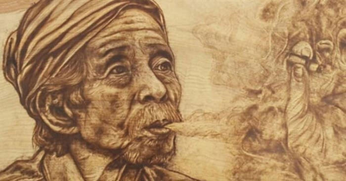

Lão Hạc thổi cái mồi rơm, châm đóm. Tôi đã thông điếu và bỏ thuốc rồi. Tôi mời lão hút trước. Nhưng lão không nghe...
- Ông giáo hút trước đi.
Lão đưa đóm cho tôi
- Tôi xin cụ...
Và tôi cầm lấy đóm, vo viên một điếu. Tôi rít một hơi xong, thông điếu rồi mới đặt vào lòng lão. Lão bỏ thuốc, nhưng chưa hút vội. Lão cầm lấy đóm, gạt tàn, và bảo:
- Có lẽ tôi bán con chó đấy, ông giáo ạ!
Lão đặt xe điếu, hút. Tôi vừa thở khói, vừa gà gà đôi mắt của người say, nhìn lão, nhìn để làm ra vẻ chú ý đến câu nói của lão đó thôi. Thật ra thì trong lòng tôi rất dửng dưng. Tôi nghe câu ấy đã nhàm rồi. Tôi lại biết rằng: lão nói là nói để có đấy thôi; chẳng bao giờ lão bán đâu. Vả lại, có bán thật nữa thì đã sao? Làm quái gì một con chó mà lão có vẻ băn khoăn quá thế...

Lão hút xong, đặt xe điếu cuống, quay ra ngoài, thở khói. Sau một điếu thuốc lào, óc người ta tê dại đi trong một nỗi đê mê nhẹ nhõm. Lão Hạc ngồi lặng lẽ, hưởng chút khoái lạc con con ấy. Tôi cũng ngồi lặng lẽ. Tôi nghĩ đến mấy quyển sách quý của tôi. Hồi bị ốm nặng ở Sài Gòn tôi bán gần hết cả áo quần, nhưng vẫn không chịu bán cho ai một quyển. Ốm dậy, tôi về quê, hành lý chỉ vẻn vẹn có một cái va-ly đựng toàn những sách. Ôi những quyển sách rất nâng niu! Tôi đã nguyện giữ chúng suốt đời, để lưu lại cái kỷ niệm một thời chăm chỉ, hăng hái và tin tưởng đầy những say mê đẹp và cao vọng: mỗi lần mở một quyển ra, chưa kịp đọc dòng nào, tôi đã thấy bừng lên trong lòng tôi như một rạng đông, cái hình ảnh tuổi hai mươi trong trẻo, biết yêu và biết ghét... Nhưng đời người ta không chỉ khổ một lần. Mỗi lần cùng đường đất sinh nhai, và bán hết mọi thứ rồi, tôi lại phải bán đi một ít sách của tôi. Sau cùng chỉ còn có năm quyển, tôi nhất định, dù có phải chết cũng không chịu bán. Ấy thế mà tôi cũng bán! Mới cách đây có hơn một tháng thôi, đứa con nhỏ của tôi bị chứng lỵ gần kiệt sức... Không! Lão Hạc ơi! Ta có quyền giữ cho ta một tí gì đâu? Lão quý con chó vàng của lão đã thấm vào đâu với tôi quý năm quyển sách của tôi...Này! Thằng cháu nhà tôi, đến một năm nay, chẳng có giấy má gì đấy, ông giáo ạ!
Con biếu thầy ba đồng để thỉnh thoảng thầy ăn quà; xưa nay con ở nhà mãi cũng không nuôi được bữa nào, thì con đi cũng chẳng phải lo; thầy bòn vườn đất với làm thuê làm mướn thêm cho người ta thế nào cũng đủ ăn; con đi chuyến này cố chí làm ăn, bao giờ có bạc trăm con mới về, không có tiền, sống khổ sống sở ở cái làng này, nhục lắm!.... Tôi chỉ còn biết khóc, chứ còn biết làm sao được nữa? Thẻ của nó, người ta giữ. Hình của nó, người ta chụp rồi. Nó lại đã lấy tiền của người ta. Nó là người của người ta rồi, chứ đâu còn là con tôi?...
*
* *
- Thế nó cho bắt à?